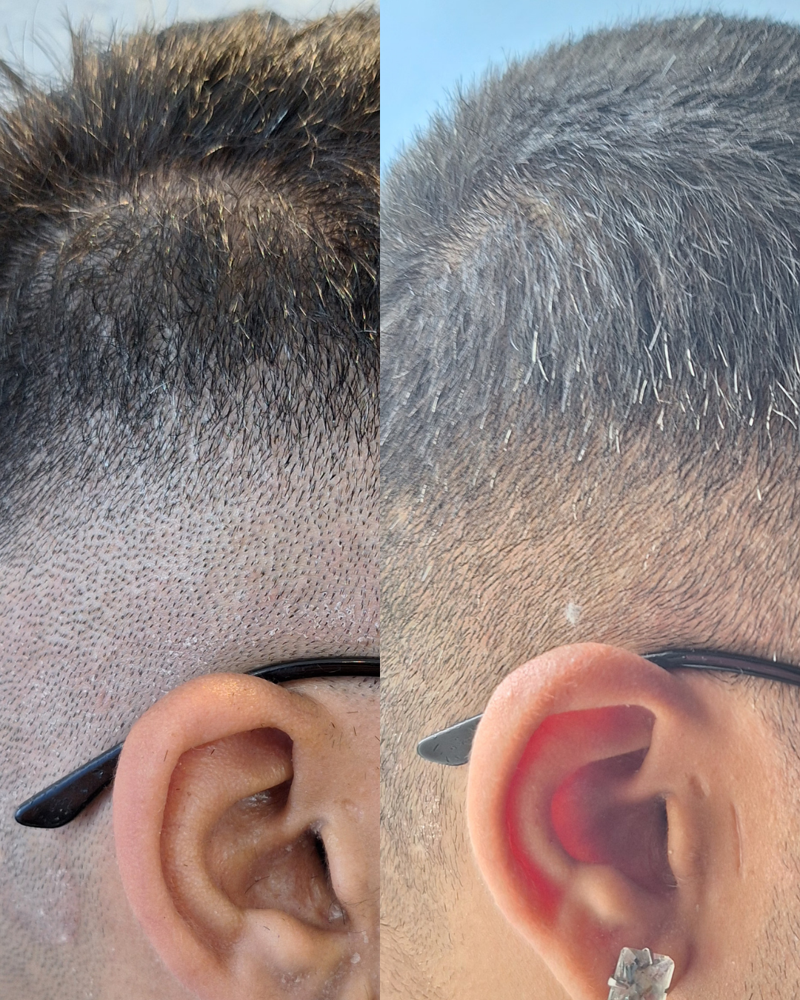

Nutrição Couro cabeludo Inflamação Oxigenação Folículo Hábitos
A saúde capilar pede um olhar atento para a sua história.
Queda, afinamento e desconfortos no couro cabeludo podem ter muitos fatores envolvidos. A avaliação organiza os sinais e ajuda a construir uma rotina de cuidado mais consciente.

O que a ciência observa
Um olhar preciso sobre a queda
Alguns números ajudam a situar o cenário. Compreendê-los é o primeiro passo para um cuidado mais técnico e sereno.
Até 40%
das mulheres convivem com queda ou afinamento em algum momento
muitas só buscam cuidado quando o fio já afinou
2–3 meses
pode ser o intervalo entre o gatilho (estresse, parto, dieta) e o pico perceptível da queda
a raiz responde muito antes de o fio cair
+100
mulheres acompanhadas por Kelly em consultório
a experiência clínica que inspirou este protocolo
A sua história
Algum destes perfis encontra eco em você?
Dois caminhos frequentes, e igualmente merecedores de escuta técnica e acolhedora.
Queda por estresse ou pós-parto
A queda intensificou-se após estresse intenso, dieta restritiva ou nos meses pós-parto. No banho e na escova, o fio parece sair em excesso, e a insegurança cresce.
Shampoos, vitaminas por conta própria, loções promissoras… e a sensação de que mexer só no fio não alcança o que acontece por dentro.
Essa intuição merece ser ouvida.
Couro cabeludo inflamado
Coceira, descamação e oleosidade fazem parte do dia a dia. Os fios parecem opacos e sem força, e lavar com frequência parece não resolver.
Talvez já tenha tentado minoxidil e loções químicas, e o ciclo tenha sido frustrante. Muitas vezes o ponto não é só o fio, é o terreno inflamado onde ele nasce.
Há um terreno a compreender.
Nenhuma dessas experiências define você. A avaliação oferece um espaço técnico para observar sinais, histórico e rotina antes de decidir os próximos cuidados.
A ciência do protocolo
Cuidar do couro cabeludo também é cuidar de você.
O fio cair é o momento visível. O que define se o folículo enfraquece ou resiste foi se organizando antes no couro cabeludo e no metabolismo. Inflamação, oxigenação da raiz, eixo intestino–pele, nutrição e hábitos de higienização compõem esse cenário técnico, muitas vezes pouco explicado.
Esses fatores orientam a avaliação capilar para que você compreenda, com clareza, os cuidados mais adequados ao seu momento.

A especialista por trás do protocolo
Kelly Regina Ferreira Correia
Terapeuta Naturalista Integrativa
- Naturalista
- Estética Integrativa
- Saúde Capilar
- Couro Cabeludo
Terapeuta Naturalista Integrativa, com atuação em estética natural, saúde capilar e regeneração da pele. Kelly entende que acompanhar a queda vai além de shampoos e loções: começa no entendimento do couro cabeludo, do metabolismo e dos hábitos.
Foi acompanhando dezenas de mulheres com dúvidas, inseguranças e informações desencontradas que este protocolo ganhou forma. Não para gerar medo: para devolver tranquilidade, autonomia e confiança no próprio cabelo.

O cuidado em etapas
Uma jornada capilar desenhada com você
A orientação nasce da avaliação e reúne observação, escolhas de rotina e acompanhamento compatíveis com a sua realidade.
- Diagnóstico da raiz Leitura clara do que pode estar inflamando o couro cabeludo e enfraquecendo o folículo com precisão e serenidade.
- Genética em contexto Compreenda como a predisposição à queda pode ser acompanhada quando o terreno onde o fio nasce é cuidado.
- Rotina de cuidado orientada Sugestões de uso e hábitos escolhidos de acordo com a avaliação, com atenção ao conforto do couro cabeludo.
- Reeducação de hábitos + checklist Uma rotina sustentável de higienização, alimentação e sono com checklist para o dia a dia.
- Oxigenação e massagem do couro cabeludo Técnica de massagem para apoiar a irrigação, nutrir a raiz e fortalecer o fio desde o nascimento.
Bônus
Leitura de rótulos capilares
Como ler rótulos, reconhecer compostos que podem irritar o couro cabeludo e escolher produtos que respeitam a raiz com critério técnico e autonomia.
Para quem é
Este protocolo encontra quem?
A proposta é individual e começa por uma conversa. Veja se este momento encontra eco na sua história.
Encontra eco em quem
- ✓ Entende que acompanhar a queda pede hábitos consistentes, não só promessas de embalagem.
- ✓ Deseja cuidar da causa da queda, não apenas disfarçar o afinamento.
- ✓ Busca uma abordagem científica, premium e sem atalhos.
- ✓ Está pronta para compreender o próprio couro cabeludo e sustentar o cuidado no tempo.
Pode não ser para quem
- ✕ Busca resposta imediata sem qualquer ajuste de hábito.
- ✕ Espera garantias absolutas ou uma resposta igual para todas as pessoas.
- ✕ Não deseja dedicar atenção à saúde do couro cabeludo.
- ✕ Prefere manter apenas o shampoo antiqueda como única estratégia.
Cuidado orientado, sem atalhos
Comece pela sua avaliação capilar
A consulta organiza informações, dúvidas e prioridades para que os próximos passos sejam escolhidos com critério, conforto e respeito ao seu tempo.
Atendimento individual
O que a avaliação contempla
- · Avaliação cuidadosa do couro cabeludo e da sua rotina
- · Orientação de cuidado construída a partir do encontro
- · Recomendações de produtos e hábitos, quando pertinentes
- · Guia de higienização e autocuidado em casa
- · Roteiro de hábitos para acompanhar o dia a dia
- · Orientação de massagem do couro cabeludo
- · Material de apoio para leitura consciente de rótulos
Uma conversa para começar com clareza
Avaliação do couro cabeludo inclusa · Atendimento individualizado
Escuta profissional · Orientação individualizada · Próximos passos claros
Aviso: este material e as orientações têm caráter estético e educativo. Não substituem consulta médica nem avaliação dermatológica. Quedas intensas, súbitas ou acompanhadas de lesões merecem investigação clínica. Cada organismo é único; em caso de dúvida, procure um profissional de confiança.